Introduction: Simulink Control
Contents
The open-loop plant model
In the Introduction: Simulink Modeling page we demonstrated how Simulink can be employed to simulate a physical system. More generally, Simulink can also simulate the complete control system, including the control algorithm in addition to the physical plant. As mentioned previously, Simulink is especially useful for generating the approximate solutions of mathematical models that may be prohibitively difficult to solve "by hand." For example, consider that you have a nonlinear plant. A common approach is to generate a linear approximation of the plant and then use the linearized model to design a controller using analytical techniques. Simulink can then be employed to simulate the performance of your controller when applied to the full nonlinear model. Simulink can be employed for generating the linearized model and MATLAB can be employed for designing the controller as described in the other Introduction pages. Various control design facilities of MATLAB can also be accessed directly from within Simulink. We will demonstrate both approaches in this page.
Recall the Simulink model of the toy train system derived in the Introduction: Simulink Modeling page and pictured below.

You can generate this model yourself, or you can download the completed model here. Assuming that the train only travels in one dimension (along the track), we want to apply control to the train engine so that it starts and comes to rest smoothly, and so that it can track a constant speed command with minimal error in steady state.
Implementing a PID controller in Simulink
Let us first create the structure for simulating the train system in unity feedback with a PID controller. In order to make our Simulink model more understandable, we will first save the train model into its own subsystem block. To accomplish this, delete the three scope blocks and replace each one by an Out1 block from the Sinks library. Label each Out1 block with the corresponding variable name, "x1_dot", "x1", and "x2". Then delete the Signal Generator block and replace it with an In1 block from the Sources library. Label this input "F" for the force generated between the train engine and the railroad track. Your model should now appear as follows.

Next select all of the blocks in your model (Ctrl A) and select Create Subsystem from the Edit menu at the top of the model window. With a little rearranging and relabeling, your model will appear as shown below.

Now we can add a controller to our system. We will employ a PID controller which can be implemented using a PID Controller block from the Continuous library. Placing this block in series with the train subsystem, your model will appear as follows. In the following, we model the controller as generating the force "F" directly. This neglects the dynamics with which the train engine generates the torque applied to the wheels, and subsequently neglects the dynamics of how the force is generated at the wheel/track interface. This simplified approach is taken at this point since we only wish to introduce the basic functionality of Simulink for controller design and analysis.

Double-clicking on the PID Controller block, we will initially set the Integral (I) gain field equal to 0 and will leave the Proportional (P) and Derivative (D) gains as their defaults of 1 and 0, respectively. Next add a Sum block from the Math Operations library. Double-click on this block and modify the List of signs field to "|+-". Since we wish to control the velocity of the toy train engine, we will feedback the engine's velocity. This is accomplished by 4ring a line off of the "x1_dot" signal and connecting it to the negative sign of the Sum block. The output of the Sum block will be the velocity error for the train engine and should be connected to the input of the PID Controller block. Connecting the blocks as described and adding labels, your model should appear as follows.

Next add a Signal Builder block from the Sources library to represent the velocity commanded to the train. Since we wish to design a controller to bring the train smoothly up to speed and smoothly to rest, we will test the system with a velocity command that steps up to 1 m/s followed by a step back down to 0 m/s (recall that our system is a toy train). To generate this type of command signal, double-click on the Signal Builder block. Then choose Change time range from the Axes menu at the top of the block's dialog window. Set the Max time field to "300" seconds. Next, set the step up to occur at 10 seconds and the step down to occur at 150 seconds. This is accomplished by clicking on the corresponding portions of the signal graph (left and right vertical lines) and either dragging the line to the desired position, or entering the desired time in the T field at the bottom of the window. When done, your signal should appear as follows.

Also add a Scope block from the Sinks library and use it to replace the Out1 block for the train's velocity. Relabeling the blocks, your model will appear as follows.

We are now ready to run the closed-loop simulation. If you wish to skip the above steps, you may download the completed model with control here.
Running the closed-loop model
Before running the model, we need to assign numerical values to each of the variables used in the model. For the train system, we will employ the following values.
- 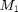 = 1 kg
- 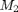 = 0.5 kg
- = 1 N/sec
- 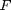 = 1 N
- 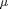 = 0.02 sec/m
- 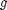 = 9.8 m/s^2
Create a new m-file and enter the following commands.
M1 = 1; M2 = 0.5; k = 1; F = 1; mu = 0.02; g = 9.8;
Execute your m-file in the MATLAB command window to define these values. Simulink will recognize these MATLAB variables for use in the model. Next we need to set the time for which our simulation will run to match the time range of the command from the Signal Builder block. This is accomplished by selecting Parameters from the Simulation menu at the top of the model window and changing the Stop Time field to "300". Now, run the simulation and open the "x1_dot" scope to examine the velocity output (hit autoscale). The result as shown below demonstrates that the closed-loop system is unstable for this controller.

Since the performance achieved above is unsatisfactory, we need to redesign our controller. We will first demonstrate how to extract a model from Simulink into MATLAB for analysis and design. Then we will demonstrate how to design the control from directly within Simulink.
Extracting a model into MATLAB
The Simulink Control Design toolbox offers the functionality to extract a model from Simulink into the MATLAB workspace. This is especially useful for complicated, or nonlinear simulation models. This is also useful for generating discrete-time (sampled) models. For this example, let us extract a continous-time model of our train subsystem. First we need to identify the inputs and outputs of the model we wish to extract. The input to the train system is the force . We can designate this fact by right-clicking on the signal representing "F" (output of the PID block) and choosing Linearization Points > Input Point from the resulting menu. Likewise, we can designate the output of the train system by right-clicking on the "x1_dot" signal and choosing Linearization Points > Output Point from the resulting menu. These inputs and outputs will now be indicated by small arrow symbols as shown in the following figure. Since we wish to extract a model of the train by itself, without control, we need to further delete the feedback signal, otherwise we will extract the closed-loop model from to 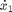. Your model should now appear as follows.
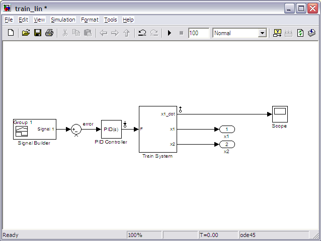
We can now extract the model by opening the Linear Analysis Tool. This is accomplished by selecting Control Design > Linear Analysis from under the Tools menu at the top of the model window. Following these steps will open the window shown below.
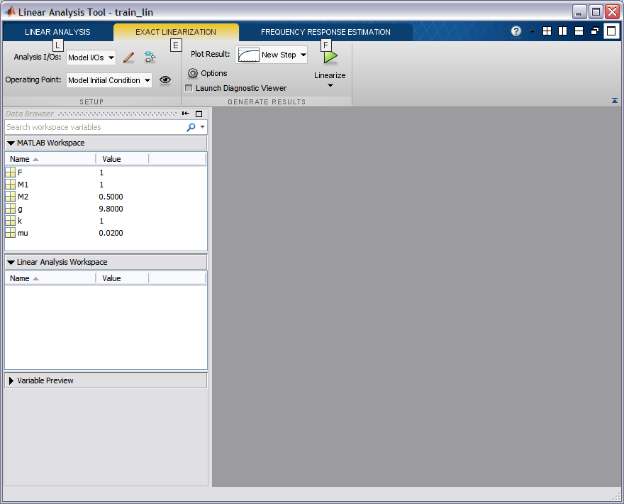
This tool generates an LTI object from a (possibly nonlinear) Simulink model and allows you to specify the point about which the linearization is performed. Since our Simulink model is already linear, our choice of operating point will have no effect and we can leave it as the default Model Initial Condition. In order to generate the linearized model, select the Linearize button in the above figure, which is indicated by the green triangle. The Linear Analysis Tool window should now appear as shown below.
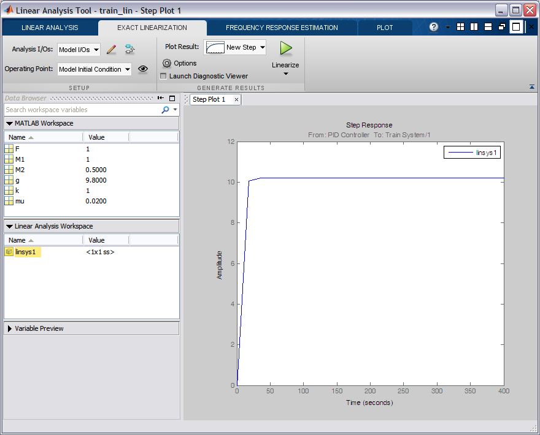
Inspecting the above, the step response of the linearized model was automatically generated. Comparing this step response to the one generated by the simulation of the open-loop train system in the Introduction: Simulink Modeling page, you can see that the responses are identical. This makes sense since the simulation model was already linear. Additionally, the linearization process generated the object linsys1 shown in the Linear Analysis Workspace above. This LTI object can be exported for use within MATLAB by simply dragging the object into the MATLAB Workspace window.
Having extracted this model, we can now employ all of the facilities that MATLAB offers for controller design. For example, let us employ the following commands to generate and analyze the closed-loop system reflecting the Simulink model created above.
sys_cl = feedback(linsys1,1);
pole(sys_cl)
ans =
-1.5261
0.0000
0.0670 + 1.1977i
0.0670 - 1.1977i
Examination of the above demonstrates that the closed-loop system in its current state has poles with positive real part and, therefore, is unstable. This agrees with the result of our closed-loop simulation from above. We can then employ MATLAB to design a new controller. Instead, we will demonstrate how to access some of MATLAB's functionality from directly within Simulink.
Controller design within Simulink
Rather than performing the controller design in MATLAB, we can also launch interactive tools to tune our controller from within Simulink. One manner in which this can be done is to double-click on the PID Controller in the model and select the Tune button to launch the PID Tuner GUI. Rather than do this, will launch the more general Simulink Control Design GUI by selecting Linear Analysis > Compensator Design from under the Tools menu located at the top of the model window. Following these steps will open the Control and Estimation Tools Manager window shown below.
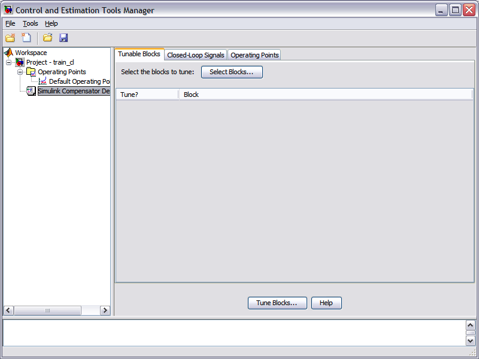
The first thing that needs to be done is to identify the controller block that is to be tuned. This is accomplished by first clicking on the Select Blocks button, and then selecting the PID Controller block from the resulting window as shown below. Next click the OK button. Note that controllers represented in other types of blocks (Transfer Function, State Space, etc.) can also be tuned.
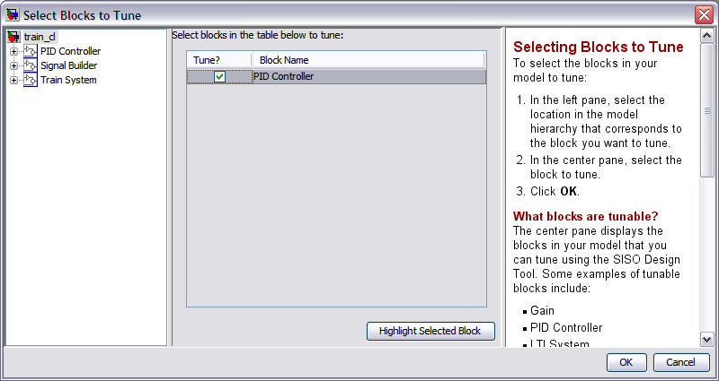
Before we proceed to tune our controller, we must first identify the inputs and outputs of the closed-loop system we wish to analyze. This is done in the same manner we did when extracting a model into MATLAB. Specifically, right-click on the velocity command signal (output of the Signal Builder block) and choose Linearization Points > Input Point from the resulting menu to identify the input of our closed-loop system. Similarly, right-click on the train engine velocity signal ("x1_dot") and select Linearization Points > Output Point from the menu to choose the output of our system. Your model should now appear as follows where the small arrow symbols identify the input and output of the model.
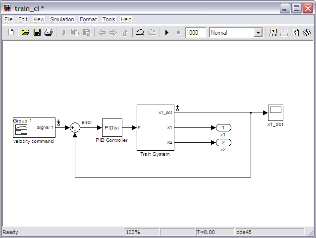
Now that we have identified the block to tune and our input and output signals, we can now commence with tuning the controller. Select the Tune Blocks button in the Control and Estimation Tools Manager window. This will open the Design Configuration Window shown below which provides some introduction on how to employ the interactive design tool. In essence, this GUI is the SISO Design Tool that is available from within MATLAB as well.
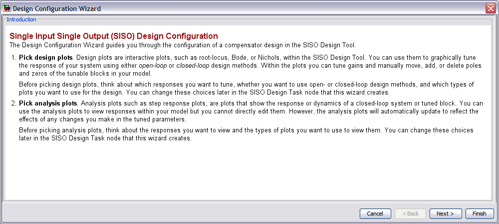
Clicking the Next button, we will choose the design plots we wish to employ for designing our controller. In this example, we will employ a root locus design approach and hence will choose a Plot Type of Root Locus for Plot 1 as shown below. Since the root locus approach to design employs a plot from the open-loop system for placing the closed-loop poles, we will leave the choice of Open/Closed Loops as Open Loop 1 (this is our only choice!).
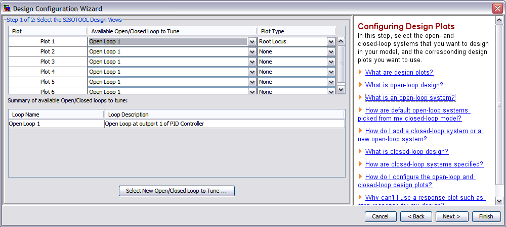
Clicking the Next button again will allow us to choose our analysis plots. We use the step response plot to assess how well we are able to meet our goal of bringing the train up to speed smoothly with minimal steady-state error to a constant speed command. Therefore, we will choose a Plot Type of Step from the drop-down menu under Plot 1 as shown below. We will also select Plot 1 under the Plot Contents portion of the window for the only system that is defined. There is only one system available because we have defined only a single input and single output for our system.
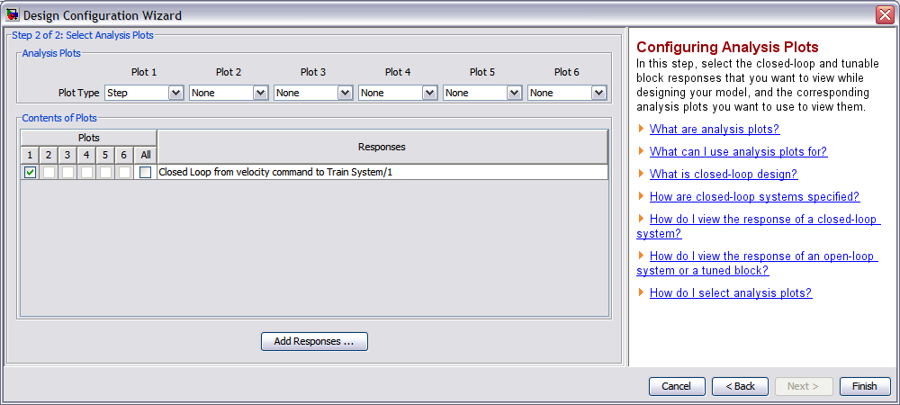
Selecting the Next Button will then open the SISO Design Tool with a root locus plot and a step response plot. The root locus plot shown below displays the closed-loop pole locations of the train system plant under simple proportional control. Examining the plot, one can see that many values of loop gain will place closed-loop poles in the right-half plane leading to an unstable response.
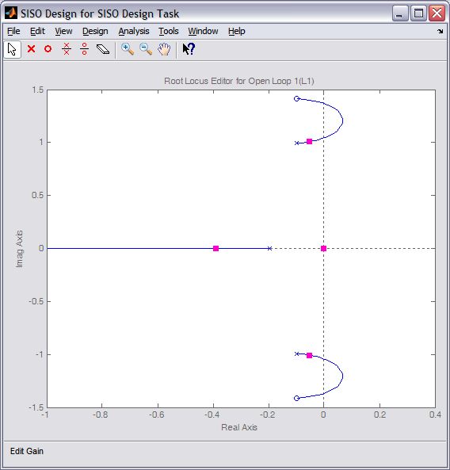
If we decrease the loop gain sufficiently, we can move the closed-loop poles into the left-half plane and we can stabilize our system. This can be accomplished graphically by "grabbing" the pink boxes marking the closed-loop pole locations and dragging them toward the open-loop pole locations (marked by x's). A loop gain of approximately 0.1 will stabilize the system. Examining the corresponding step response, which will change automatically in response to the gain change if the Real-Time Update box is checked in the LTI Viewer window, you can see that while the response is stable its steady-state error is quite large.
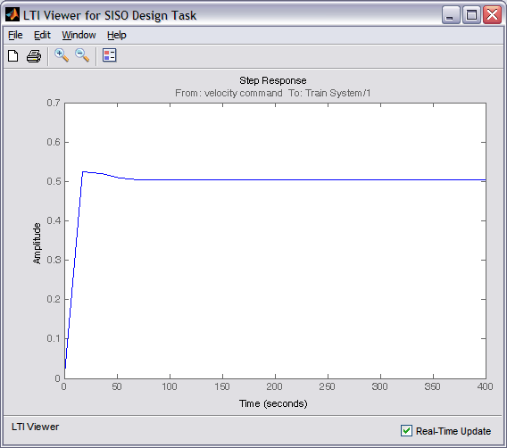
Recall that adding integral control is one way to reduce the steady-state error for a system. In this case, adding an integrator via the controller will make the system type 1, where type 1 systems can track step references with zero steady-state error. Recall the following form of a PI controller.
(1)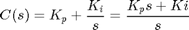
Therefore, a PI controller will add an integrator and a zero to our open-loop system. The integrator can be added to the system by right-clicking in the field of the root locus plot and selecting Add Pole/Zero > Integrator from the resulting menu. Similarly, the zero can be added by right-clicking on the root locus plot and selecting Add Pole/Zero > Real zero from the resulting menu. Then click where along the real axis you wish to place the zero. We will place the zero just to the right of the plant pole on the real axis. You can move the zero by clicking on it and dragging it to a new location. Once you have placed the zero, then grab the pink boxes representing the closed-loop poles and attempt to line the three dominant poles up so that they have the same real part. There also will be a real closed-loop pole to the left that is "faster" than the rest, and a closed-loop pole at the origin that is cancelled by a closed-loop zero at the origin. The resulting root locus plot is shown below.
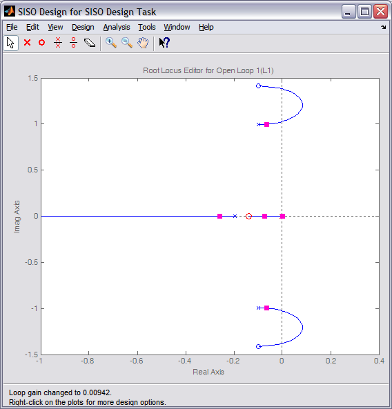
The compensator can also be edited by directly typing in pole and zero locations. This can be done by choosing Edit Compensator from the Design menu located at the top of the SISO Design Task window. The window that opens is shown below. We will more precisely place the zero at -0.15 and will choose a loop gain equal to 0.01.
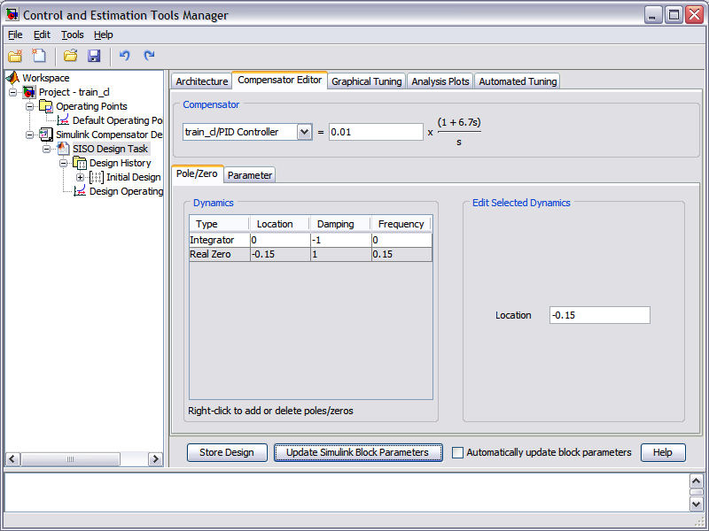
The resulting closed-loop step response plot is shown below demonstrating that the train engine is brought to speed smoothly and with zero steady-state error for a constant speed command.
The control gains that have been chosen can then be applied to the Simulink model by clicking the Update Simulink Block Parameters button under the Compensator Editor tab of the Control and Estimation Tools Manager window (see above). The simulation can then be run with this newly tuned controller. Clicking on the Scope block for the train engine's velocity and selecting autoscale will produce a plot like the one shown below.
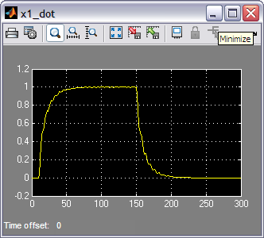
Overall this response seems to meet our goals of bringing the train up to speed and to rest smoothly, while maintaining minimal steady-state error. This response matches the result generated with the SISO Design Tool above because that analysis and the Simulink model used the exact same linear model.